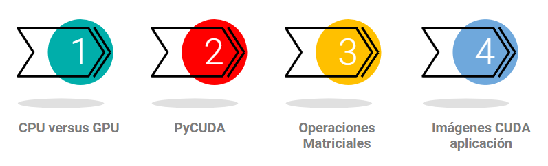

Unidad 10: PyCUDA#
Contenido de la unidad#
Comparemos a las CPU contra las GPU#
CPU
Varios núcleos, pero generalmente menos que una GPU.
Baja latencia.
Bueno para procesamiento en serie.
Puede realizar un puñado de operaciones a la vez.
GPU
Muchos núcleos para procesamiento en paralelo.
Alto rendimiento.
Bueno para procesamiento en paralelo.
Puede realizar miles de operaciones a la vez.
PyCUDA#
PyCUDA ofrece un acceso sencillo y pythonico a la API de computación paralela Compute Unified Device Architecture (CUDA), de Nvidia. Aunque ya existen varios envoltorios para la API de CUDA, ¿por qué elegir PyCUDA?
Gestión automática de objetos vinculada a su ciclo de vida. Este enfoque, simplifica significativamente la escritura de código que es correcto, libre de fugas y resistente a caídas. PyCUDA también maneja las dependencias, lo que significa que no se desvinculará de un contexto antes de liberar toda la memoria asignada en él.
Completitud. PyCUDA pone a tu disposición toda la potencia de la API de controladores de CUDA, si así lo deseas.
Verificación automática de errores. Todos los errores de CUDA se traducen automáticamente en excepciones de Python.
Velocidad. Dado que la capa base de PyCUDA está escrita en C++, todas las ventajas mencionadas anteriormente prácticamente no tienen coste adicional.
Usar la GPU para multiplicar y sumar elementos#
Tip
Ver el Notebook: PyCUDA_multiplicar_sumar_elementos.ipynb
O acceder a el desde PyCUDA_multiplicar_sumar_elementos_working.ipynb
Usar la GPU para multiplicar matrices#
Tip
Ver el Notebook: PyCUDA_multiplicar_matrices.ipynb
O acceder a el desde PyCUDA_multiplicar_sumar_elementos_working.ipynb
Comparativa en la creación de imágenes desde textos en GPU y en CPU#
Tip
Ver el Notebook: Stable_Diffusion_GPU_vs_CPU.ipynb
O acceder a el desde Stable_Diffusion_GPU_vs_CPU_working.ipynb
Comprendamos la indexación#
Tip
Acceder a el desde https://anuradha-15.medium.com/cuda-thread-indexing-fb9910cba084